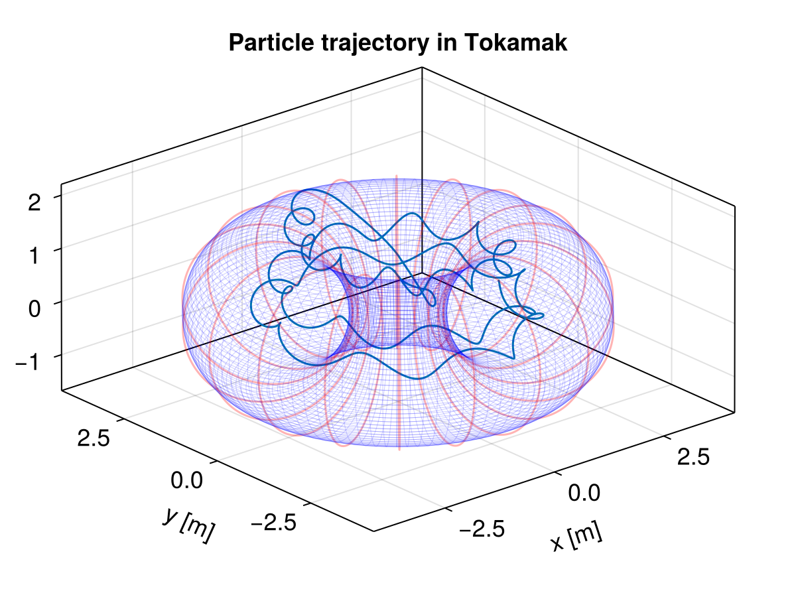

Coil Tokamak


This example shows how to trace protons in a stationary magnetic field that corresponds to a Tokamak represented by a circle of coils. A excellent introduction video to Tokamak can be found here in Mandarin.
using TestParticle, OrdinaryDiffEqVerner, StaticArrays
import TestParticle as TP
using Statistics: mean
using Printf
using CairoMakie
### Obtain field
# Magnetic bottle parameters in SI units
const ICoil = 80.0 # current in the coil
const N = 15000 # number of windings
const IPlasma = 1e6 # current in the plasma
const a = 1.5 # radius of each coil
const b = 0.8 # radius of central region
getB(xu) = SVector{3}(TP.getB_tokamak_coil(xu[1], xu[2], xu[3], a, b, ICoil*N, IPlasma))
getE(xu) = SA[0.0, 0.0, 0.0]
### Initialize particles
m = TP.mᵢ
q = TP.qᵢ
c = TP.c
# initial velocity, [m/s]
v₀ = [-0.1, -0.15, 0.0] .* c
# initial position, [m]
r₀ = [2.3, 0.0, 0.0]
stateinit = [r₀..., v₀...]
param = prepare(getE, getB; species = Proton)
tspan = (0.0, 1e-6)
prob = ODEProblem(trace!, stateinit, tspan, param)
@printf "Speed = %6.4f %s\n" √(v₀[1]^2+v₀[2]^2+v₀[3]^2)/c*100 "% speed of light"
@printf "Energy = %6.4f MeV\n" (1/√(1-(v₀[1]/c)^2-(v₀[2]/c)^2-(v₀[3]/c)^2)-1)*m*c^2/abs(q)/1e6
# Default Tsit5() alone does not work in this case! You need to set a maximum
# timestep to maintain stability, or choose a different algorithm as well.
# The sample figure in the gallery is generated with AB3() and dt=2e-11.
sol = solve(prob, Vern9(); dt = 2e-11)
### Visualization
f = Figure(fontsize = 18)
ax = Axis3(f[1, 1],
title = "Particle trajectory in Tokamak",
xlabel = "x [m]",
ylabel = "y [m]",
zlabel = "z [m]",
aspect = :data
)
lines!(ax, sol; idxs = (1, 2, 3), label = "proton")
# Plot coils
θ = range(0, 2π, length = 201)
y = a * cos.(θ)
z = a * sin.(θ)
for i in 0:17
ϕ = i*π/9
lines!(ax, y*sin(ϕ) .+ (a+b)*sin(ϕ), y*cos(ϕ) .+ (a+b)*cos(ϕ), z, color = (:red, 0.3))
end
# Plot Tokamak
u = range(0, 2π, length = 100)
v = range(0, 2π, length = 100)
U = [y for _ in u, y in v]
V = [x for x in u, _ in v]
X = @. (a + b + (a - 0.05)*cos(U)) * cos(V)
Y = @. (a + b + (a - 0.05)*cos(U)) * sin(V)
Z = @. (a - 0.05) * sin(U)
wireframe!(ax, X, Y, Z, color = (:blue, 0.1), linewidth = 0.5, transparency = true)

This page was generated using DemoCards.jl and Literate.jl.